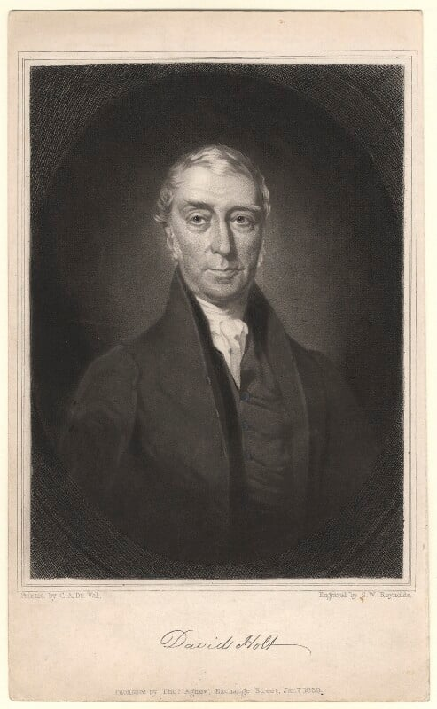

Industrialist, Educator, and Philanthropist of Manchester
David Holt stands as one of Manchester’s most distinctive early industrial figures: a cotton manufacturer, moral reformer, educational pioneer, and civic mediator whose influence stretched across more than forty years of rapid social and economic change. His 1843 memoir, Incidents in the Life of David Holt, provides a rare first person account of industrial Manchester from the perspective of a mill owner deeply committed to the welfare and moral improvement of working people.
Early life and character
Born in the mid 1760s, Holt entered adulthood during the rise of Manchester’s cotton industry. By temperament he was disciplined, devout, and civic minded. His memoir reveals a man who believed that Christian duty extended into every sphere of life workplace, community, and public institutions. He spent his long career striving to balance industrial progress with moral responsibility, often placing the wellbeing of workers and the education of the poor above commercial gain.
David Holt (1764-1846)
Portrait from the National Portrait Gallery David Holt (1764-1846), Cotton-spinner and philanthropist by Samuel William Reynolds Jr, after Charles Allen Duval mezzotint, published 1839. NPG Number: D3037 Licensed under creative commons.

Mill owner and employer
For decades Holt operated a large spinning establishment in Temple Street, employing several hundred workers. He viewed his workforce as an extension of his own household, emphasising moral guidance, stability, and mutual respect. One evening each week he gathered those who wished to attend in a room capable of holding more than three hundred people, where he read Scripture and moral literature and encouraged orderly conduct and self improvement.
When his mill closed in 1835, the workers presented him with a deeply affectionate address, thanking him for his "kind and paternal affection," "fatherly solicitude," and "deep, constant, and unabated anxiety shown for our moral improvement." Holt’s reply expressed gratitude, Christian hope, and a desire that his final years be marked by peace and usefulness, and five hundred copies of his letter were printed at the workers’ own expense.
Pioneer of the Lancasterian school movement
Holt’s most enduring public legacy lies in education. He became a central figure in establishing the Royal Manchester Lancasterian School, one of the earliest large scale educational institutions for poor children. When Joseph Lancaster visited Manchester to promote his monitorial system of education, Holt hosted him, organised the first meeting to consider a school on Lancaster’s plan, and helped secure premises in Lever Street for the initial experiment.
Despite strong opposition from supporters of Dr. Bell and the Church of England, Holt and his colleagues pressed on. They led a campaign to build a purpose built schoolroom capable of accommodating one thousand children, framing it as a loyal tribute on the fiftieth year of King George III’s reign. Holt served as Chairman of the committee for nearly twenty years, during which time the school educated thousands of Manchester children at very low cost.
By 1840, the school had taught more than 21,000 children, and Holt notes with pride that few, if any, former pupils were ever arraigned at the bar of justice. His memoir also preserves a letter from the Duke of Kent (1813), praising his "zealous exertions" and "public spirit" in advancing education among the poor and confirming royal patronage for the institution.
Defender of Joseph Lancaster
Holt’s relationship with Lancaster extended beyond the founding of the Manchester school. When Lancaster later faced bankruptcy after an ill fated attempt to establish a boarding school for girls, Holt sheltered him at his home, advised him on how to face his creditors, and helped organise support from influential figures including the Duke of Kent and Lord Somerville. Holt recounts Lancaster’s decline with compassion, lamenting that a man who had given the world such a boon in education should end his life in poverty in a distant land.
Civic leadership and industrial mediation
Beyond his mill and the school, Holt played a significant role in Manchester’s civic affairs. He served as Vice President and Chairman of the Commercial Travellers’ Society and was often called upon to act as mediator during periods of industrial unrest. During the Orders in Council crisis affecting trade with the United States, he was sent as a delegate to Rochdale to mobilise manufacturers against policies harming commerce.
Holt also travelled to London and other industrial districts to organise opposition to a Factory Regulation Bill he believed would injure both workers and employers. His memoir records several major strikes in Manchester in which he met with large bodies of workers, listened to their grievances, and persuaded them to return unconditionally to work, bringing months long disputes to an end through negotiation rather than force.
Advocacy for land allotments
Holt was an early advocate of land allotments for labourers as a means of alleviating poverty and preventing the breakup of communities. He corresponded with the Poor Law Commissioners in 1835, with the Duke of Kent in 1819, and with the Earl of Derby, urging that portions of crown and waste land be allotted to unemployed and under employed workers. He believed that such measures would reduce the need to remove the poor from their native places and would provide a more stable and dignified livelihood.
Manchester & Salford Lock Hospital
Holt was a founding member and long serving Chairman of the Manchester & Salford Lock Hospital, an institution dedicated to treating and rehabilitating women suffering from venereal disease. He emphasised both medical care and moral restoration, seeing the hospital as essential to public health and as a practical expression of Christian charity. His memoir describes the hospital’s work as part of a wider effort to rescue those "" danger of being lost" and to improve the moral condition of the town.
Final years and legacy
Writing in his seventy seventh year, Holt describes himself as having been placed, through unforeseen and unfortunate circumstances, in a state of "dependence." Yet his tone is one of resignation and thankfulness rather than bitterness. He looks back on a life marked by service, sacrifice, and steadfast moral conviction, and he hopes that his record of public exertions will secure some small claim on the generous consideration of his fellow townspeople.
His legacy endures in the educational foundations he helped build, the humane employer worker relationships he modelled, the civic institutions he strengthened, and the historical record he preserved. For descendants and researchers, David Holt offers a compelling example of an industrialist who sought consistently to align commercial activity with Christian duty and social responsibility.
Timeline of key events
| Year | Event |
|---|---|
| 1760s | Birth of David Holt. |
| Late 1700s | Enters Manchester’s cotton industry. |
| Early 1800s | Establishes large spinning mill in Temple Street, employing several hundred workers. |
| 1809–1810 | Hosts Joseph Lancaster in Manchester; helps found the Manchester Lancasterian School. |
| 1811 | First official report of the school issued; Holt serves as Chairman. |
| 1813 | Receives letter of commendation from the Duke of Kent praising his educational work. |
| 1815–1827 | Continues leadership of the Lancasterian School; thousands of children educated. |
| 1835 | Closure of Temple Street mill; workers present a formal address of gratitude. |
| 1835 | Corresponds with Poor Law Commissioners on land allotments for labourers. |
| 1840 | Latest school report shows over 21,000 children educated at the Manchester Lancasterian School. |
| 1843 | Publishes Incidents in the Life of David Holt, recording forty years of public and industrial life. |
Reference
Holt, David. Incidents in the Life of David Holt, including a Sketch of Some of the Philanthropic Institutions of Manchester, during a Period of Forty Years. Manchester: John Harrison, Printer, Market Street, 1843.